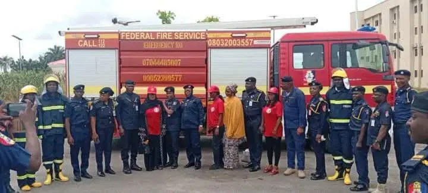

N1.3 billion worth of property saved from fire in Nasarawa

# N1.3 billion worth of property saved from fire in Nasarawa
Fire crews in Nasarawa State saved property valued at N1.3 billion during about 97 emergency calls received from January to the time of reporting, while assets worth N2.1 billion were exposed to fire hazards. The incidents caused estimated losses of N800 million and one death. Crews also rescued eight people from life-threatening situations, according to state Federal Fire Service Controller Eno Kelechi Nwachukwu.
Nwachukwu gave the figures at the launch of the 2026 National Fire Week Awareness Campaign at the Federal Secretariat in Lafia on Monday. The campaign’s theme is “Building a Fire Resilient Nigeria: One Community at a Time.” She called for a shift from responding to fires after they break out towards prevention led by communities, and said fire safety requires participation from government, businesses, institutions, families and individuals.
The Federal Fire Service plans to intensify public education on safe handling and storage of cooking gas, preventing illegal or improper electrical connections, avoiding indiscriminate refuse burning, and safely storing petroleum products and other combustible materials. Nwachukwu urged residents, business owners and market associations to take precautions and report emergencies promptly. Abigail Waya, head of the state civil service, was represented at the event by Belinda Oyigbenu Atinuke, who called for cooperation between federal and state fire services on information-sharing and emergency response. She also urged residents to switch off unused appliances and report fires before they spread.
In a keynote address, Abubakar Alhasan of the Federal University of Lafia’s Department of Geography and Environmental Management said electrical surges and overloaded cables accounted for 70 per cent of fire incidents, according to his assessment. Citing 2025 reports, he said 693 residential houses, 190 markets and 105 other premises were affected; he added that markets recorded the most deaths, with about 39. He also identified hazards including unsafe fuel storage, smoking, bush burning, gas-related fires and vehicle incidents, and cautioned against hiring unqualified electricians. The event included sessions on fire experiences and prevention, as well as awards recognising contributions to fire response and support for the service.
Source: Vanguard